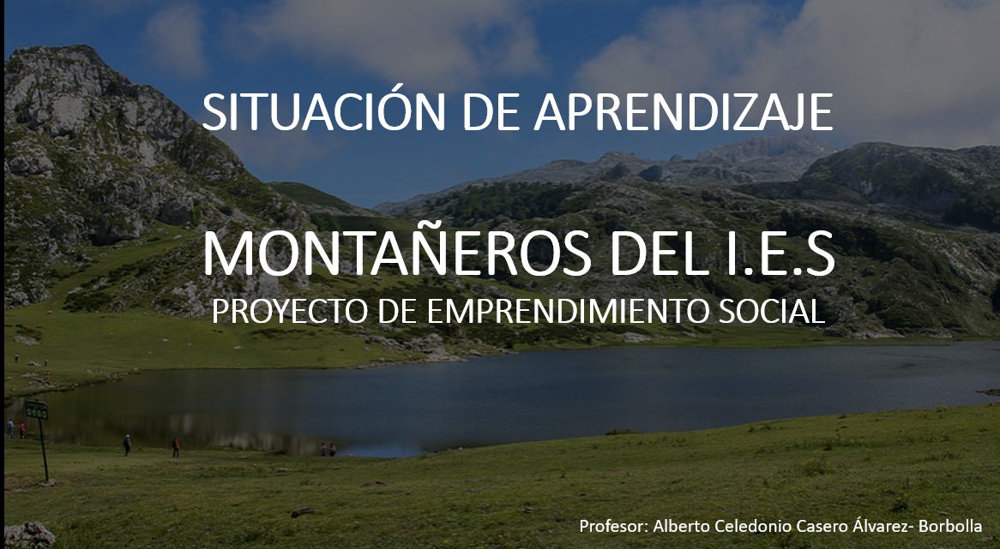
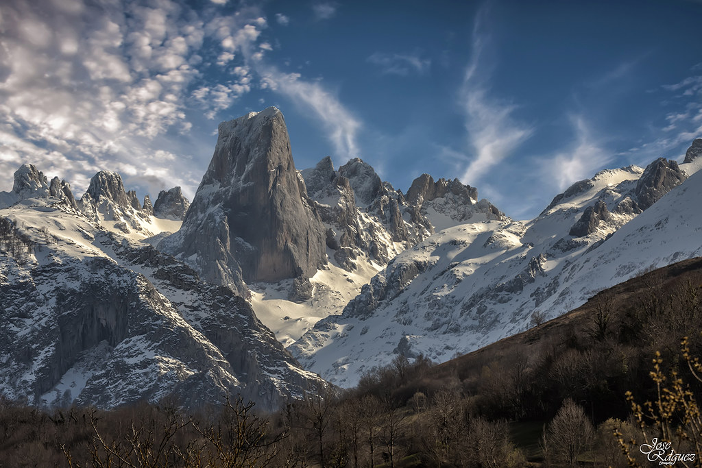
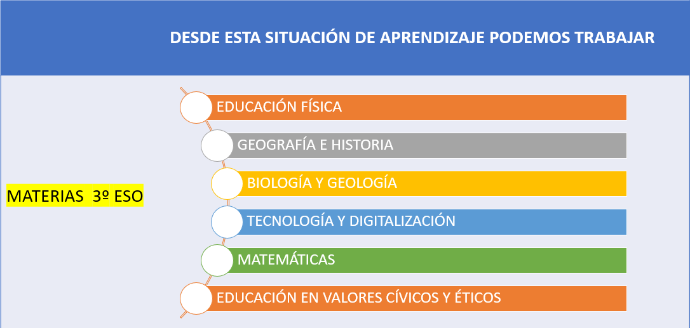
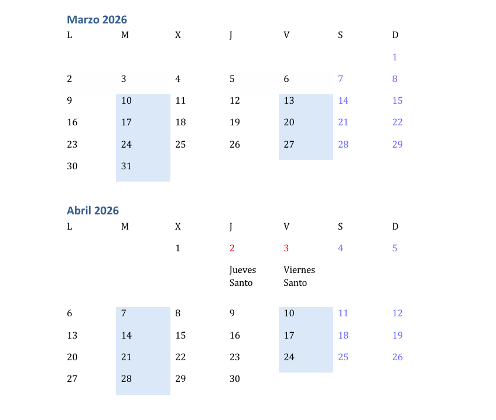
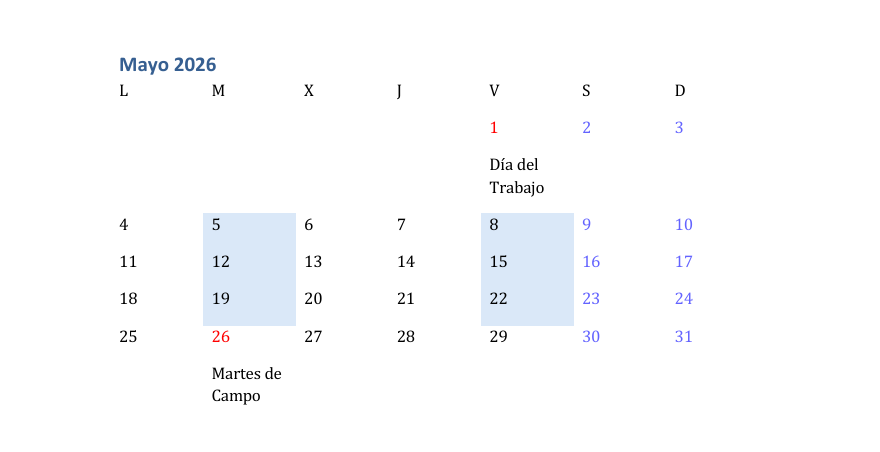
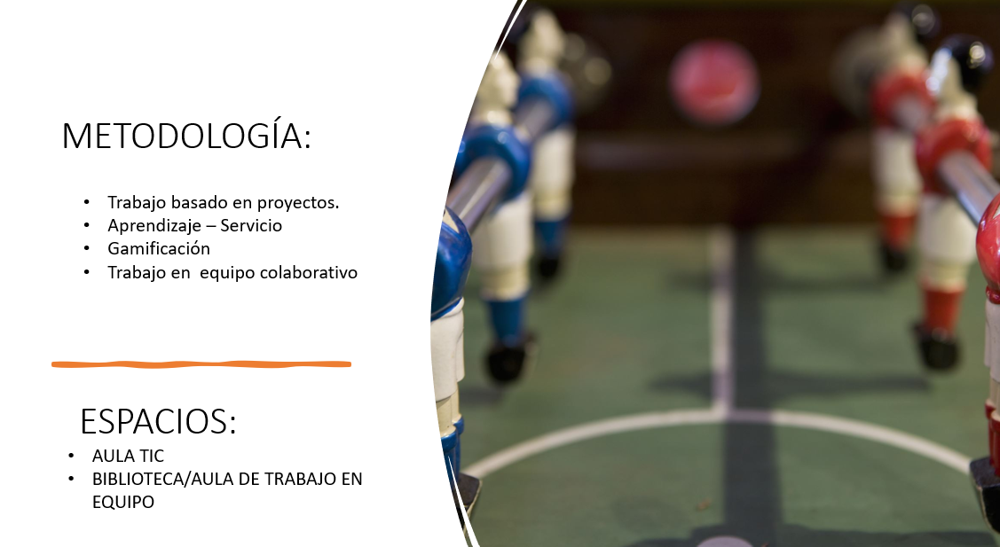
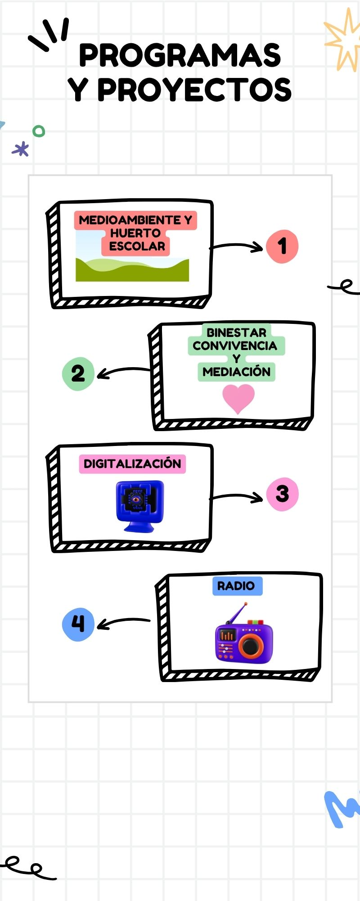
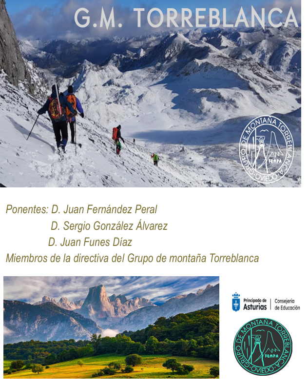
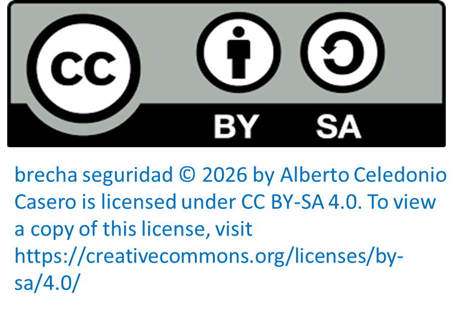

Inicio


La situación de aprendizaje propuesta pretende la elaboración y publicitación de un grupo de montaña federado, que permita la práctica segura de experiencias de senderismo, escalada y esquí en la montaña asturiana.
IMPORTANTE: la redacción de la solicitud, envío y registro de la documentación necesaria para la creacción del club de montaña (solicitudes, requisitos reglamentarios, suscripción de seguros, etc.) corresponde al equipo directivo de centro. El alumnado se encarga de la difusión, publicidad y presentación del proyecto, colaboración indispensable para que sea conocido por toda la comunidad educativa.
A continuación procedo a describir la situación de aprendizaje propuesta, con sus diferentes apartados

ETAPA Y CURSOS: 3º CURSO DE EDUCACIÓN SECUNDARIA OBLIGATORIA
MATERIA: PROYECTO DE EMPRENDIMIENTO SOCIAL O EMPRESARIAL

-GRUPO CLASE (GRAN GRUPO) para presentacion del proyecto, puesta en común, exposiciones globales, etc.

-4 ó 5 GRUPOS HETEROGÉNEOS DE 5 MIEMBROS. En función del número de alumnado que tenga la unidad.
La selección del alumnado de cada grupo se hace en función del nivel de compromiso previsto del alumnado. Es un configuración a priori en función de los resultados académicos, historial y actitud del alumnado. En cada grupo de haber al menos: 1 o 2 alumnos con alto nivel de implicación, alumnado con una implicación media o normal y la presencia de 1 alumno/a con menor rendimiento académico. Esta configuración no es inamovible sino flexible y sujeta a revisión y modificación.

En función de la presencia de este tipo de alumnado, se harán las adaptaciones metodológicas necesarias y en su caso significativas. En este caso, vamos a considerar que únicamente será necesario adaptaciones de carácter metodológico. Al trabajar en equipo fundamentalmente, se buscará un completo grado de inclusión en todo el alumnado, para lo cual se tendrá en cuenta la situación particular de los alumnos, a la hora de configurar los grupos y sus tareas.
8 horas desde la segunda semana de abril a la tecera semana de mayo. Dos horas semanales para el proyecto de emprendimientos social.


1º-Crear el blog/web del club de montaña de nuestro IES.
2º-Elaborar una infografía interactiva con audio, fotos, imágenes y animaciones del proyecto.
3º- Redactar un guion y elaborar un podcast para la radio del centro educativo. nos coordinaremos con el proyecto de centro que lleva el podcast, vosotros/as lo vais a grabar.
4º-. Redactar una encuesta sencilla para saber cuantas personas estarían interesadas en formar parte del club. la encuesta tiene que tener un mínimo de 5 preguntas.Crear una hoja registro para anotar todos los miembros de la comunidad educativa, interesados en el club de montaña.
5º- Diseñar y conseguir ropa (camisetas, chadal, etc) y equipo distintivo (chapas, pañuelos, pins, tazas, etc) buscar 3 empresas que hagan este material, elaborar un informe con su dirección web, productos que hacen y precios.
6º. Diseñar un juego en 2d ó en 3d para promocionar el club e incluirlo en la web, o bien, diseñar una scape room digital sobre temas de montaña y senderismo en Asturias para dar publicidad al club e incluirlo en la web.
7º Selección de Tres rutas de senderismo para realizar una cada trimestre del curso 2026/2027, y elaborar folletos informativos.
8º- Presentación del proyecto en el salón de actos
La intención educativa de esta situación de aprendizaje es la elaboración y publicitación de un grupo de montaña federado, que permita la práctica segura de experiencias de senderismo, escalada y esquí en la montaña asturiana.
IMPORTANTE: la redacción de la solicitud, envío y registro de la documentación necesaria para la creacción del club de montaña (solicitudes, requisitos reglamentarios, suscripción de seguros, etc.) corresponde al equipo directivo de centro. El alumnado se encarga de la difusión, publicidad y presentación del proyecto, colaboración indispensable para que sea conocido por toda la comunidad educativa.
Dentro de la materia de “Proyecto de Emprendimiento Social o Empresarial”, se articula la elaboración, ejecución y evaluación de un proyecto social que partiendo de una necesidad real, redunde en un beneficio para la comunidad en la que el alumnado está inserto. De esta manera, se ha detectado la necesidad de dotar al centro educativo de un club de montaña, que con autonomía e independencia del centro, pueda canalizar el enorme interés detectado entre el alumnado por las experiencias relacionadas con el deporte de montaña.
La contemplación, disfrute y valoración del entorno natural, constituye un enorme incentivo en la búsqueda de la mejora de las condiciones de vida a través del desarrollo de hábitos saludables y responsables con el desarrollo sostenible y la conservación del patrimonio natural de nuestra comunidad.

Esta situación de aprendizaje se relaciona con los siguientes objetivos de Desarrollo Sostenible:
3-Salud y bienestar
4-Educación de calidad
5-Igualdad de Género
13-Acción por el Clima
15-Vida y ecosistemas saludables

COMPETENCIAS ESPECÍFICAS Y DESCRIPTORES OPERATIVOS
Competencia específica 3. Diseñar y elaborar un proyecto de emprendimiento, de naturaleza social o económica, con creatividad, espíritu emprendedor y trabajo cooperativo, utilizando los diversos recursos y elementos necesarios, para gestionar su desarrollo y su viabilidad. Esta competencia específica se conecta con los siguientes descriptores: CCL1, STEM3, CD3, CPSAA5, CC4, CE1, CE3, CCEC3.
Competencia específica 4. Valorar y seleccionar estrategias de comunicación oral, escrita y audiovisual, destacando las relaciones entre todas las partes del proyecto, para mostrar cómo a través del esfuerzo personal y colaborativo se pueden alcanzar las metas propuestas. Esta competencia específica se conecta con los siguientes descriptores: CCL1, CCL5, CD3, CPSAA3, CE3, CCEC4.
Competencia específica 5. Desarrollar de forma responsable y modo cooperativo el proyecto de emprendimiento, ejecutando las acciones acordadas, para fomentar la empatía y el compromiso con la comunidad. Esta competencia específica se conecta con los siguientes descriptores: CCL1, STEM3, CD3, CPSAA1, CPSAA3, CC4, CE2, CCEC3.
Competencia específica 6. Aplicar sistemas de evaluación de procesos en el proyecto elaborado por el equipo de trabajo, considerando la experiencia como una oportunidad para aprender, para valorar el grado de cumplimiento del proyecto y proponer medidas correctoras.
Esta competencia específica se conecta con los siguientes descriptores: CCL1, STEM2, STEM4, CPSAA3, CPSAA5, CC4, CE2, CE3.
OBJETIVOS DE ETAPA
a) Asumir responsablemente sus deberes, conocer y ejercer sus derechos en el respeto a las demás personas, practicar la tolerancia, la cooperación y la solidaridad entre las personas y grupos, ejercitarse en el diálogo afianzando los derechos humanos como valores comunes de una sociedad plural y prepararse para el ejercicio de la ciudadanía democrática.
b) Desarrollar y consolidar hábitos de disciplina, estudio y trabajo individual y en equipo como condición necesaria para una realización eficaz de las tareas del aprendizaje y como medio de desarrollo personal.
c) Valorar y respetar la diferencia de sexos y la igualdad de derechos y oportunidades entre ellos. Rechazar los estereotipos que supongan discriminación entre hombres y mujeres.
e) Desarrollar destrezas básicas en la utilización de las fuentes de información para, con sentido crítico, adquirir nuevos conocimientos. Desarrollar las competencias tecnológicas básicas y avanzar en una reflexión ética sobre su funcionamiento y utilización.
g) Desarrollar el espíritu emprendedor y la confianza en sí mismo, la participación, el sentido crítico, la iniciativa personal y la capacidad para aprender a aprender, planificar, tomar decisiones y asumir responsabilidades.
h) Comprender y expresar con corrección, oralmente y por escrito, en la lengua castellana textos y mensajes complejos, e iniciarse en el conocimiento, la lectura y el estudio de la literatura.
j) Conocer, valorar y respetar los aspectos básicos de la cultura y la historia propias y de las demás personas, así como el patrimonio artístico y cultural
SABERES BÁSICOS
Del bloque A
El equipo de trabajo. - El entorno. Entorno social, cultural, medioambiental. - La cobertura de las necesidades. La acción de administraciones, Organizaciones no Gubernamentales, asociaciones y entidades sin ánimo de lucro. Los Objetivos de Desarrollo Sostenible.
Del bloque B
Cronograma. - Recursos clave: físicos, intelectuales, humanos y financieros. - Organización, funciones, división de tareas. - Búsqueda de colaboradores y alianzas. - Técnicas de exposición de proyectos. Herramientas informáticas y audiovisuales.
Del bloque C
Puesta en marcha y ejecución. La definición de procesos o procedimientos de producción de bienes y prestación de servicios. - La medición de resultados. Diseño de encuestas de satisfacción y de herramientas de evaluación por parte del colectivo destinatario. - El análisis de los resultados y medición de desviaciones. - Detección de errores en el desarrollo del proyecto y propuestas de mejora. - Valoración del equipo. Autoevaluación y coevaluación.
CRITERIOS DE EVALUACIÓN:
3.1. Definir su idea y resaltar la propuesta de valor que aporta a la resolución de la necesidad o del problema detectado.
3.2. Determinar los recursos , materiales y financieros necesarios para la puesta en marcha del proyecto y realizar una aproximación al análisis de su viabilidad legal, económica y social.
3.3. Elaborar, mediante el trabajo en grupo y utilizando diversas aplicaciones informáticas, el proyecto, destacando las características internas y su relación con el entorno, así como su función social.
4.1. Valorar y utilizar distintas estrategias de comunicación oral, así como diferntes técnicas de comunicación escrita que puedan servir de apoyo.
4.2. Exponer el proyecto creado utilizando para su presentación herramientas adecuadas quepermitan despertar en otras personas o grupos el interés hacia su trabajo
5.1. Utilizar estrategias de ejecución de proyectos que faciliten los objetivos establecidos
5.2. Apreciar la importancia del trabajo individual y colectivo para el logro de los objetivos planteados.

Esta situación de aprendizaje se vincula directamente con los siguienes planes y programas del Centro:
- Mediomabiente y huerto escolar.
- Bienestar y convivencia.
- Digitalización.
- Radio.

ACTIVIDAD COMPLEMETARIA CHARLA GRUPO DE MONTAÑISMO TORREBLANCA

Blog y Web con Google site o Blogger
Infografía con canva o Powerpoint
Podcast y busqueda de videos: Audacity, you tube.
Scape-room: Geneally
Textos y plantillas excel, Word
Tutoriales en canales de you tube
Todas las herramientas se concretaran específicamente para cada tarea en la actividad B2.2b

| Título | SDA GRUPO DE MONTAÑA |
|---|---|
| Descripción | Situación de aprendizaje basada en la metodología aprendizaje-servicio Y apredizaje colaborativo |
| Autoría | alberto celedonio casero alvarez-borbolla |
| Licencia | Creative Commons BY-SA 4.0 |
Este contenido fue creado con eXeLearning, el editor libre y de fuente abierta diseñado para crear recursos educativos.
Obra publicada con Licencia Creative Commons Reconocimiento Compartir igual 4.0